Last updated on Jan 31, 2014
Your wallet is where you keep all your Dogecoins.
Local wallets save your coins on your computer. This means if your computer spontaneously explodes, you will lose your coins (unless you make backups!). There are also online wallets (more convenient, less secure) and paper wallets (physical), which are covered in different sections.
You can have multiple wallets, like multiple bank accounts. For example, keep some in an online wallet for convenience and store the rest in secure and backed up local wallets.
Recommendation: start out with a local wallet, then explore online options when you are comfortable with Dogecoin. Never store all your coins online!
Go to the official site. You should see the following:
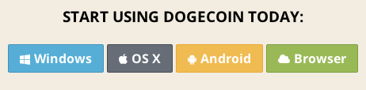Pick your operating system below to continue with the local wallet guide.
On the official site click the Windows option. It should start downloading the latest wallet in a zip file.
Once downloaded, navigate to the downloaded file and extract the file contents. This can be done by right clicking the file and selecting "extract all" or something similar.
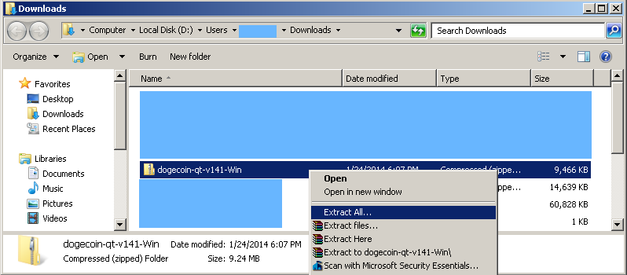Go to the extracted contents and run "dogecoin-qt.exe".
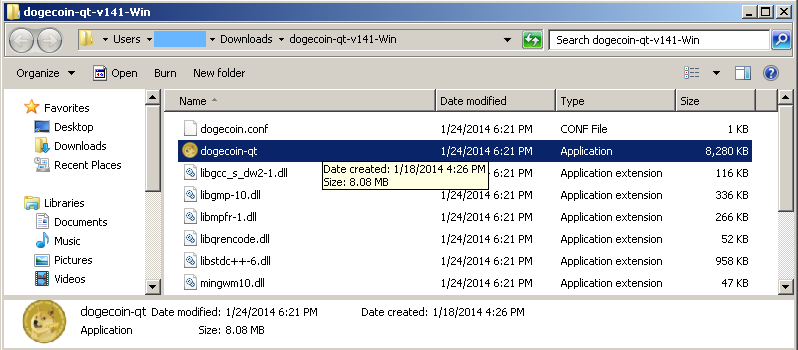Depending on your security settings, you may asked if you want to run this file. If so, this will come up EVERY time unless you uncheck "always ask before opening this file". Click "Run".
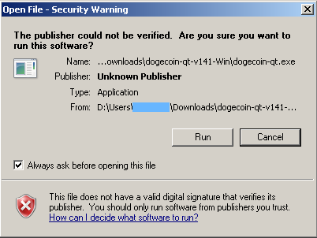A loading image should come up. Since the wallet requires an internet connect, if you have a firewall you must allow the program access. Make sure the boxes are checked, then allow access if prompted. Below is what the default Windows 7 firewall looks like.
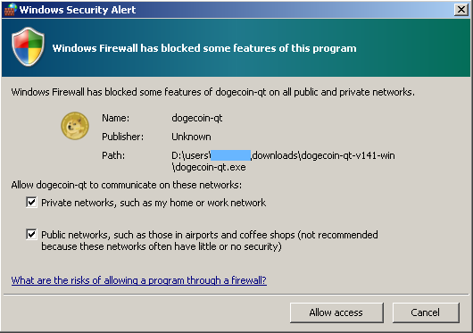When you first run the program it takes a while to sync. This is because all transactions are saved in something called a block chain. Your wallet must basically download the entire transaction history, so give it some time.
Tip: if you are impatient you can download most of the block chain through your browser here.
The bottom left section indicates how much of the block chain is synced, and the bottom right icon indicates if you are connected. Once fully synced, your "wallet" and "recent transactions" will be accurate.
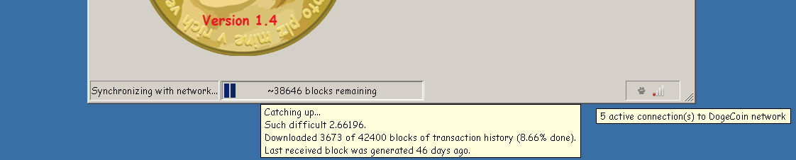Now you have a wallet and can start receiving coins! When you select "much receive" you will see your receive address. To receive Doge, just give people this address. It is difficult to type and is cAse SEnsitIve, so copy by either right clicking the address and selecting copy OR by selecting the address then clicking "copy address" at the bottom.
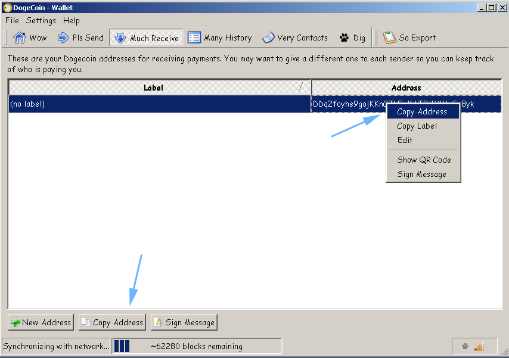If you want to track your sources of coins more effectively, you can create new addresses and give them labels from "much receive". For example, I can create and give out a new address to receive doge specifically from this guide, which will distinguish them in the history. All these addresses go to the same wallet.
Note: it is safe to give this receive address to people you don't know, it is a one way street! Bad shibes cannot pull doge out from it.
There is also a "Pls send" button used for sending doge to addresses you know. Just fill out the fields and send!
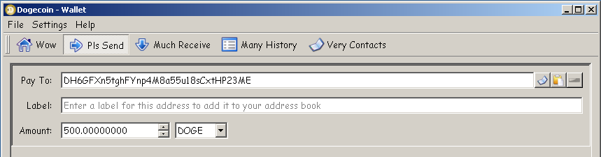The official wallet can encrypt the wallet file, requiring a password to access it. To get started, click "settings" then "encrypt wallet".
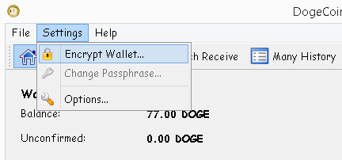You will be prompted to enter a password and confirm it. The wallet will need to restart afterwards.
Warning: do not forget this password. You will lose your wallet if you do.
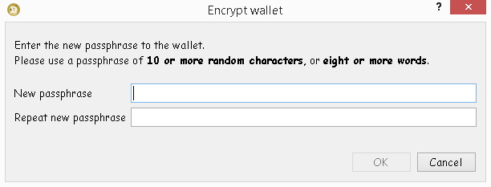Note: we recommend you encrypt your wallet first (instructions above).
To start, go to "file" then "backup wallet".
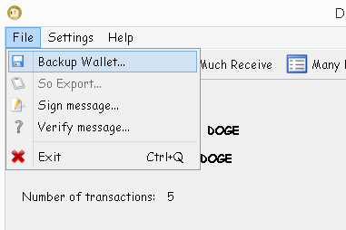You will be asked to pick a location to save the file and a file name. Remember where and what you named it, it will be a DAT file.
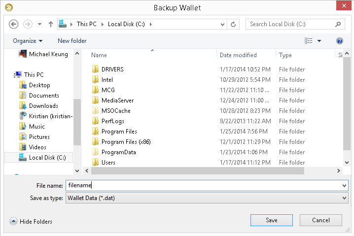Now you have a duplicate of your wallet information...however it is on the same computer so it doesn't do you any good if your computer is destroyed or wiped. We need to put it in at least one other location.
Navigate to your backup file's location and copy it to at least one of the following:
Tip: put your physical backups (USB, DVD, CD, etc) in a different location to prevent losing your wallet in the event the building housing your computer is lost.
Tip: place the file in a truecrypt volume before placing it in a storage service or physical device to add even more security.
Ensure the wallet program is closed, then navigate to C:\Users\YOUR_WINDOWS_USERNAME\AppData\Roaming\DogeCoin. If you do not see the "AppData" folder, that is because it is hidden. Go to folder options (WIN7: organize > change folder and search options; WIN8: view > options > change folder and search options), then on the view tab, show hidden files and folders.
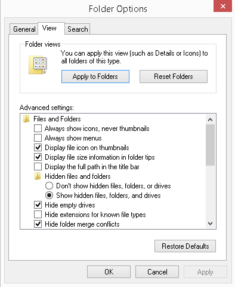Place your backup DAT file in the DogeCoin folder and rename it to wallet (wallet.dat). If there is a wallet.dat file already, replace it or rename it to something else (like wallet_abc.dat) before placing in your backup. You should be good to go now!
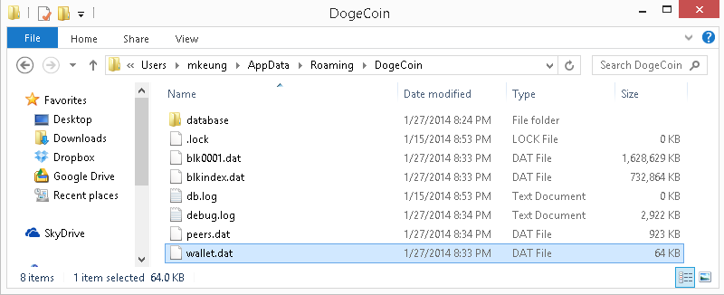Wallets get important updates over time. Backup your wallet before performing an upgrade just in case. Upgrading should be as simple:
If it works, feel free to delete or archive the old dogecoin-qt folder. This is because the wallet data is not stored in the same location as the wallet program, but at C:\Users\YOUR_WINDOWS_USERNAME\AppData\Roaming\DogeCoin (do not delete this).
Note: version 1.5 removed the "dig" functionality, which allowed you to mine from within the wallet program. This is because the dedicated mining software (such as cgminer) is much more effective.
Note: you will have to reindex / resync the blockchain when you update. Just give it time.
On the official site click the OS X option. It should start downloading the latest wallet in a zip file.
Once downloaded, navigate to the downloaded file and unzip the file contents. This can be done by right clicking the file and selecting "open".
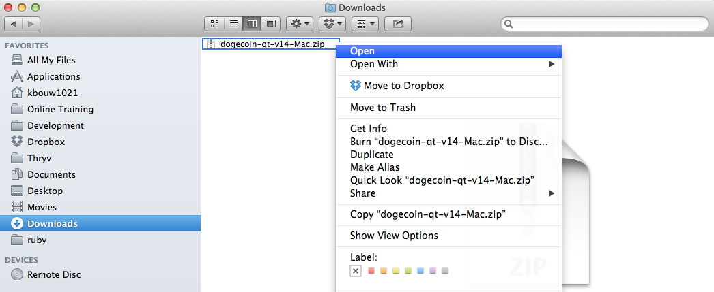With the file contents extracted, the dogecoin-qt application should show. Drag this app into your applications folder. 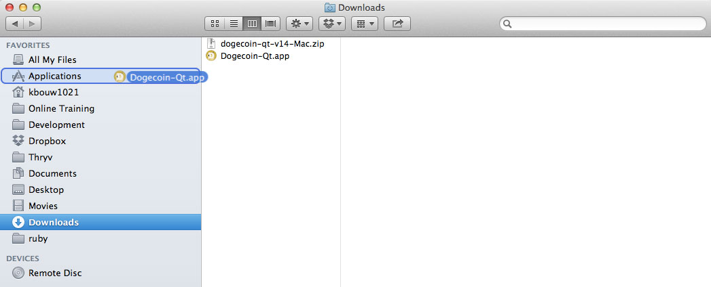
Go to your applications folder and run the "Dogecoin-Qt" application.
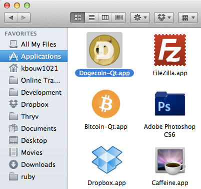Depending on your security settings, you may asked if you want to run this file. If so, click "Open".
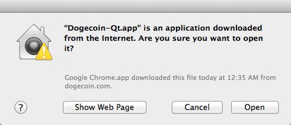When you first run the program it takes a while to sync. This is because all transactions are saved in something called a block chain. Your wallet must basically download the entire transaction history, so give it some time.
Tip: if you are impatient you can download most of the block chain through your browser here.
The bottom left section indicates how much of the block chain is synced, and the bottom right icon indicates if you are connected. Once fully synced, your "wallet" and "recent transactions" will be accurate.
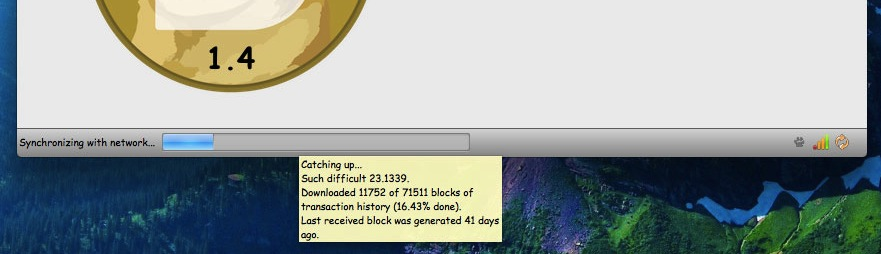Now you have a wallet and can start receiving coins! When you select "much receive" you will have a single address. To receive Doge, just have people send to this address. Since it is difficult to type and is cAse SEnsiTiVe, you can copy the address either by right clicking the address and selecting copy OR by selecting the address then clicking "copy address" at the bottom.
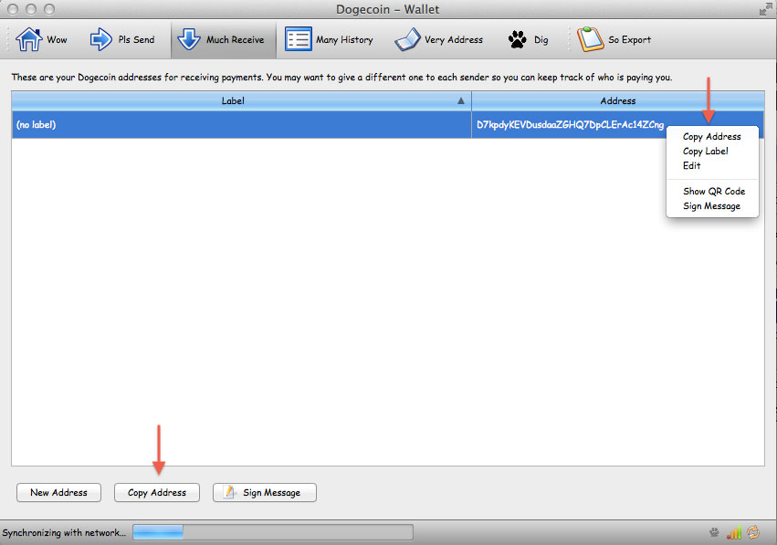If you want to track your sources of coins more effectively, you can create new addresses and give them labels from "much receive". For example, I can create and give out a new address to receive doge specifically from this guide, which will distinguish them in the history. All these addresses go to the same wallet though.
Note: it is safe to give this receive address to people you don't know, it is a one way street! Bad shibes cannot pull doge out from it.
There is also a "Pls send" button used for sending doge to addresses you know. Just fill out the fields and send!
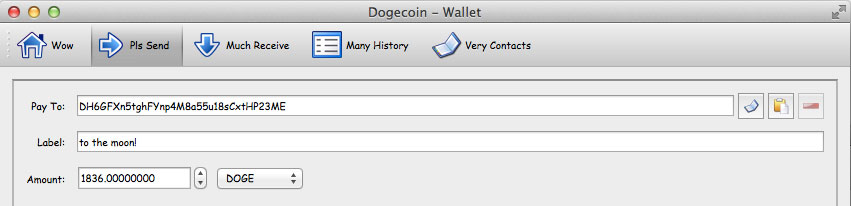The official wallet can encrypt the wallet file, requiring a password to access it. To get started, click "settings" then "encrypt wallet".
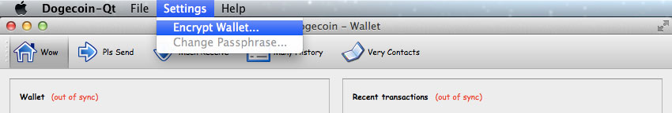You will be prompted to enter a password and confirm it. The wallet will need to restart afterwards.
Warning: do not forget this password. You will lose your wallet if you do.
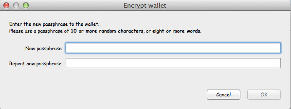Note: we recommend you encrypt your wallet first (instructions above)
To start, go to "file" then "backup wallet".
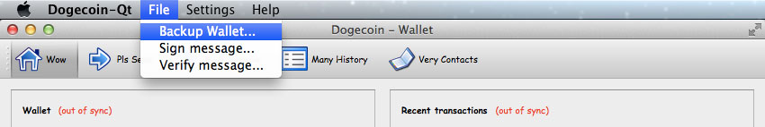You will be asked to pick a location to save the file and a file name. Remember where and what you named it, it will be a DAT file.
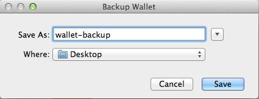 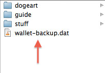Now you have a duplicate of your wallet information...however it is on the same computer so it doesn't do you any good if your computer is destroyed or wiped. We need to put it in at least one other location.
Navigate to your backup file's location and copy it to at least one of the following:
Tip: put your physical backups (USB, DVD, CD, etc) in a different location to prevent losing your wallet in the event the building housing your computer is lost.
Tip: place the file in a truecrypt volume before placing it in a storage service or physical device to add even more security.
Ensure the wallet program is closed, then navigate to YOUR_MAC_USERNAME/Library/Application/Support/Dogecoin. If you do not see the "Dogecoin" folder, then you are in the wrong library directory. Mac has three library folders, with the one you need hidden by default. Open your finder, select "Go" from the top menu and then press the "option" key on your keyboard. You will notice a new library folder appear in the list of options, select it.
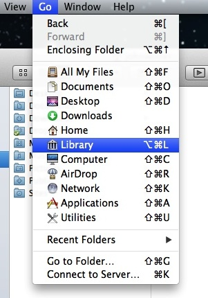Then navigate to your "Application Support" directory and open the "Dogecoin" folder.
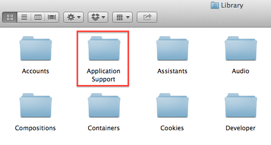 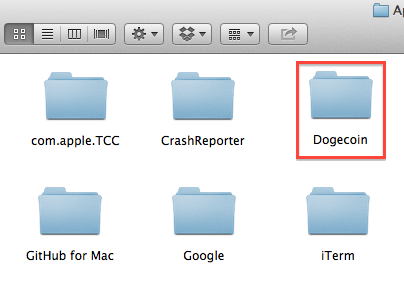Place your backup DAT file in the DogeCoin folder and rename it to wallet (wallet.dat). If there is a wallet.dat file already, replace it or rename it to something else (like wallet_abc.dat) before placing in your backup. You should be good to go now!
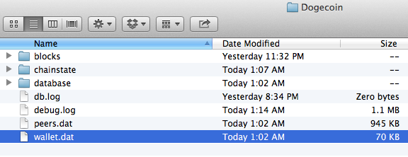Wallets get important updates over time. Upgrading should be as simple:
If it works, feel free to delete or archive the old dogecoin-qt folder. This is because the wallet data is not stored in the same location as the wallet program, but at YOUR_MAC_USERNAME/Library/Application/Support/Dogecoin (do not delete this).
Note: version 1.5 removed the "dig" functionality, which allowed you to mine from within the wallet program. This is because the dedicated mining software (such as cgminer) is much more effective.
Note: you will have to reindex / resync the blockchain when you update. Just give it time.